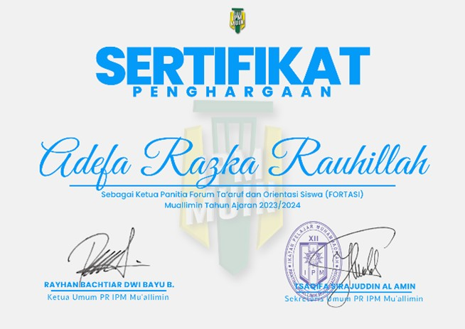

Ketua Forum Ta’aruf dan Orientasi Siswa (FORTASI)
Saya dipercaya sebagai ketua Forum Ta’aruf dan Orientasi Siswa (FORTASI) yang diselenggarakan oleh PR IPM Mu’allimin pada tahun 2023, sebagai bentuk tanggung jawab dalam memimpin jalannya kegiatan orientasi siswa. Dalam peran ini, saya mengoordinasikan tim, menyusun konsep acara, serta memastikan seluruh rangkaian kegiatan berjalan dengan baik, sehingga mampu memberikan pengalaman orientasi yang terarah, edukatif, dan berkesan bagi peserta.

program Mubaligh Hijrah Internasional Thailand 1445H
Saya berpartisipasi sebagai anggota dalam program Mubaligh Hijrah Internasional Thailand 1445H sebagai bentuk pengabdian dan pengembangan diri di tingkat internasional. Melalui kegiatan ini, saya terlibat dalam aktivitas dakwah dan sosial di lingkungan masyarakat, sekaligus mengasah kemampuan komunikasi lintas budaya, adaptasi, serta memperluas wawasan global.

Milad Sinar Kaum Muhammadiyah ke-98
Saya dipercaya sebagai ketua panitia dalam perayaan Milad Sinar Kaum Muhammadiyah ke-98 2023 sebagai bentuk tanggung jawab dalam memimpin dan mengoordinasikan seluruh rangkaian kegiatan. Dalam peran ini, saya mengatur perencanaan acara, membagi tugas tim, serta memastikan pelaksanaan kegiatan berjalan dengan lancar, terstruktur, dan sesuai dengan tujuan yang telah ditetapkan.

anggota bidang perkaderan di PR IPM Mu’allimin periode 2022/2023
Saya berperan sebagai anggota bidang perkaderan di PR IPM Mu’allimin periode 2022/2023, dengan tanggung jawab dalam mendukung proses pembinaan dan pengembangan kader organisasi. Dalam posisi ini, saya terlibat dalam perencanaan serta pelaksanaan program yang bertujuan meningkatkan kualitas anggota, baik dari segi kepemimpinan, pemahaman organisasi, maupun karakter.

Kepala Bidang perkaderan di PR IPM Mu’allimin periode 2023/2024
Saya menjabat sebagai Kepala Bidang Perkaderan di PR IPM Mu’allimin periode 2023/2024, dengan tanggung jawab utama dalam merancang dan mengelola program pengembangan kader organisasi. Dalam peran ini, saya memimpin tim, menyusun strategi pembinaan, serta memastikan pelaksanaan kegiatan berjalan efektif dalam meningkatkan kualitas kepemimpinan, pemahaman organisasi, dan karakter anggota.

ketua komunitas Leader Community
Saya menjabat sebagai ketua komunitas Leader Community di bawah naungan PR IPM Mu’allimin pada periode 2020/2021, dengan tanggung jawab dalam mengelola dan mengembangkan komunitas yang berfokus pada pembentukan jiwa kepemimpinan. Dalam peran ini, saya mengoordinasikan anggota, merancang kegiatan pengembangan diri, serta mendorong terciptanya lingkungan yang aktif, kolaboratif, dan berorientasi pada peningkatan kapasitas kepemimpinan.

produksi film pendek Berbenah
Saya berperan sebagai editor dalam produksi film pendek Berbenah yang berhasil meraih juara 3 sebagai bentuk apresiasi atas kualitas karya yang dihasilkan. Dalam peran ini, saya bertanggung jawab dalam proses penyuntingan video, penyusunan alur cerita, serta pengolahan visual agar mampu menyampaikan pesan secara efektif dan menarik kepada audiens.

produksi film pendek Sepertiga Malam
Saya berperan sebagai editor dalam produksi film pendek Sepertiga Malam yang berhasil meraih juara 3 sebagai bentuk apresiasi atas kualitas karya yang dihasilkan. Dalam peran ini, saya bertanggung jawab dalam proses penyuntingan video, penguatan alur cerita, serta pengolahan visual agar mampu menyampaikan pesan secara lebih mendalam dan emosional kepada audiens.

hobi di bidang pemrograman
Saya memiliki hobi di bidang pemrograman dengan menguasai beberapa bahasa seperti C++, PHP, JavaScript, CSS, dan HTML. Melalui aktivitas ini, saya mengembangkan kemampuan dalam membangun logika pemrograman, memahami struktur aplikasi, serta menciptakan solusi digital sederhana yang mendukung minat saya di bidang teknologi dan pengembangan sistem.

pengembangan bisnis keluarga Kopi Sedjati
Saya terlibat dalam pengembangan bisnis keluarga Kopi Sedjati, yang bergerak di bidang penjualan kopi bubuk, kopi literan, dan biji kopi. Dalam prosesnya, saya berkontribusi dalam aspek pemasaran, pengelolaan produk, serta pengembangan strategi usaha, sehingga membantu meningkatkan kualitas dan daya saing bisnis di pasar.

MENDAKI GUNUNG
Saya memiliki hobi mendaki gunung sebagai bentuk aktivitas yang menantang sekaligus sarana refleksi diri. Beberapa gunung yang telah saya daki antara lain Gunung Sindoro, Gunung Ungaran, Gunung Sumbing, Gunung Merbabu, Gunung Lawu, Gunung Prau, dan Gunung Andong. Melalui kegiatan ini, saya mengasah ketahanan fisik, mental, serta kemampuan dalam menghadapi tantangan dan bekerja sama dalam tim.

hobi membaca buku
Saya memiliki hobi membaca buku sebagai sarana untuk memperluas wawasan dan memperdalam pemahaman terhadap berbagai bidang pengetahuan. Melalui aktivitas ini, saya melatih kemampuan berpikir kritis, memperkaya perspektif, serta meningkatkan kualitas diri secara berkelanjutan.

hobi menulis
Saya memiliki hobi menulis sebagai sarana untuk mengekspresikan ide, gagasan, dan refleksi pribadi. Melalui aktivitas ini, saya mengembangkan kemampuan berpikir terstruktur, komunikasi tertulis, serta kepekaan dalam menyampaikan pesan secara jelas dan bermakna.

hobi bermain futsal
Saya memiliki hobi bermain futsal sebagai bentuk aktivitas fisik yang juga melatih kerja sama tim, strategi, dan kedisiplinan. Melalui kegiatan ini, saya mengembangkan kemampuan koordinasi, komunikasi di lapangan, serta menjaga kebugaran tubuh secara konsisten.

hobi sepak bola
Saya memiliki hobi bermain sepak bola sebagai aktivitas yang tidak hanya menjaga kebugaran fisik, tetapi juga melatih kerja sama tim, strategi, dan daya tahan. Melalui kegiatan ini, saya mengembangkan kemampuan koordinasi, komunikasi, serta mental kompetitif dalam mencapai tujuan bersama.

lembaga media PW IPM Daerah Istimewa Yogyakarta
Saya bergabung dengan lembaga media PW IPM Daerah Istimewa Yogyakarta pada periode 2022/2025 sebagai bagian dari pengembangan diri di bidang media dan komunikasi. Dalam keterlibatan ini, saya berkontribusi dalam produksi konten, pengelolaan informasi, serta penyampaian pesan organisasi secara kreatif dan informatif kepada publik.

lembaga pers PD IPM Kota Yogyakarta
Saya bergabung dengan lembaga pers PD IPM Kota Yogyakarta pada periode 2022/2024 sebagai bagian dari pengembangan minat di bidang jurnalistik dan media. Dalam peran ini, saya terlibat dalam produksi konten, pengelolaan informasi, serta penyampaian berita dan pesan organisasi secara komunikatif dan bertanggung jawab

hobi bermain game eFootball
Saya memiliki hobi bermain game eFootball sejak tahun 2013 sebagai bentuk hiburan sekaligus sarana melatih strategi, fokus, dan pengambilan keputusan. Melalui aktivitas ini, saya mengembangkan kemampuan analisis permainan, ketelitian, serta konsistensi dalam mencapai target.

panitia kegiatan angkatan di kampus
Saya terlibat sebagai panitia dalam berbagai kegiatan angkatan di kampus sebagai bentuk partisipasi aktif dalam lingkungan akademik. Dalam peran ini, saya berkontribusi dalam perencanaan, koordinasi, serta pelaksanaan acara, sekaligus mengasah kemampuan kerja sama tim, komunikasi, dan manajemen kegiatan agar berjalan dengan efektif dan terorganisir.

hobi bermain pingpong
Saya memiliki hobi bermain pingpong sebagai aktivitas olahraga yang melatih refleks, konsentrasi, dan koordinasi tangan-mata. Kegiatan ini juga membantu saya menjaga kebugaran fisik, meningkatkan fokus, serta mengasah ketangkasan dan strategi dalam permainan.

hobi bermain gitar
Saya memiliki hobi bermain gitar sebagai sarana mengekspresikan kreativitas dan menyalurkan minat di bidang musik. Melalui aktivitas ini, saya mengembangkan kemampuan koordinasi, ketekunan dalam berlatih, serta kemampuan mengekspresikan emosi dan ide melalui alunan musik.

hobi berenang
Saya memiliki hobi berenang sebagai salah satu aktivitas olahraga yang membantu menjaga kebugaran fisik dan kesehatan tubuh. Melalui kegiatan ini, saya melatih daya tahan, kekuatan otot, serta kedisiplinan dalam menjaga rutinitas olahraga secara konsisten.